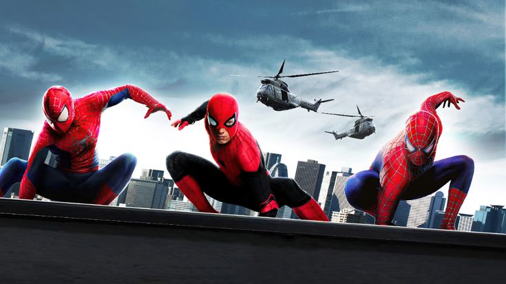

About Me and My Design Journey
I am a graphic design student who enjoys creative projects, web design, and visual storytelling. Spider-Man is one of my biggest inspirations, which is why it appears throughout this website.
Learning to use Visual Studio Code has been a great experience so far, and I am looking forward to learning CSS in the coming weeks.
This project also helped me understand the importance of structure when building web pages.
Spider-Man's Enemies
These are some of the most famous villains that appear in Spider-Man stories.
- Green Goblin, Spider-Man's main archenemy
- Doctor Octopus, a scientist with mechanical arms that give him super strength
- Venom, an alien symbiote that bonds with people to create a powerful foe
Spider-Man in Action Scene
This image shows different versions of Spider-Man working together.

Spider Icon Design
This icon represents the spider symbol associated with the character.
Favorite Superheroes
These are some of my favorite superheroes.
- Spider-Man
- Batman
Audio Practice Project
This audio is included to practice adding multimedia to a webpage.